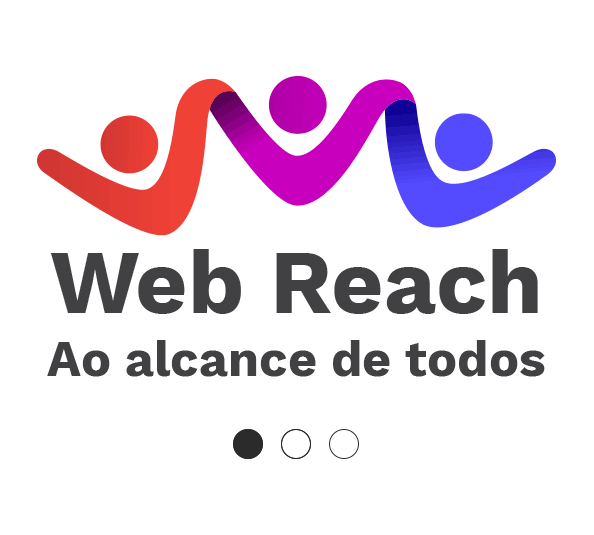
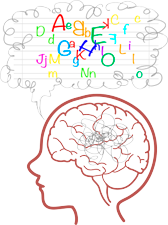

Dicas para Layout
Para Autistas
Para Deficiêntes Auditivos
Para Dislexos
Para Baixa Visão
Leitores de Tela
Deficiência VIsual
Wai-aria
Ferramentas acessivel
Botão de Foco
Aumentar/ Diminuir a fonte
Contato
Dicas para Layout
Para Autistas
Para Deficiêntes Auditivos
Para Dislexos
Para Baixa Visão
Leitores de Tela
Deficiência VIsual
Wai-aria
Ferramentas acessivel
Botão de Foco
Aumentar/ Diminuir a fonte
Contato
Desenvolvendo o layout pensando em:
Autistas
Deficiêntes Auditivos

Dislexos
Baixa Visão